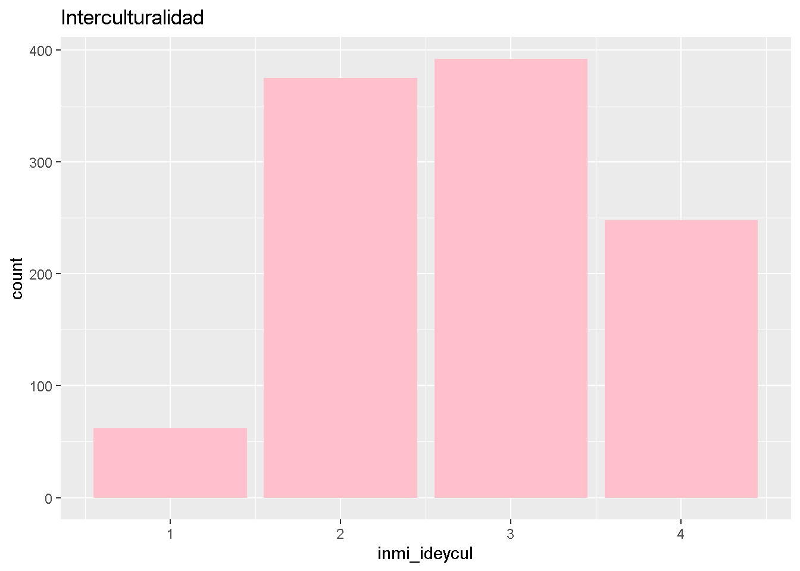
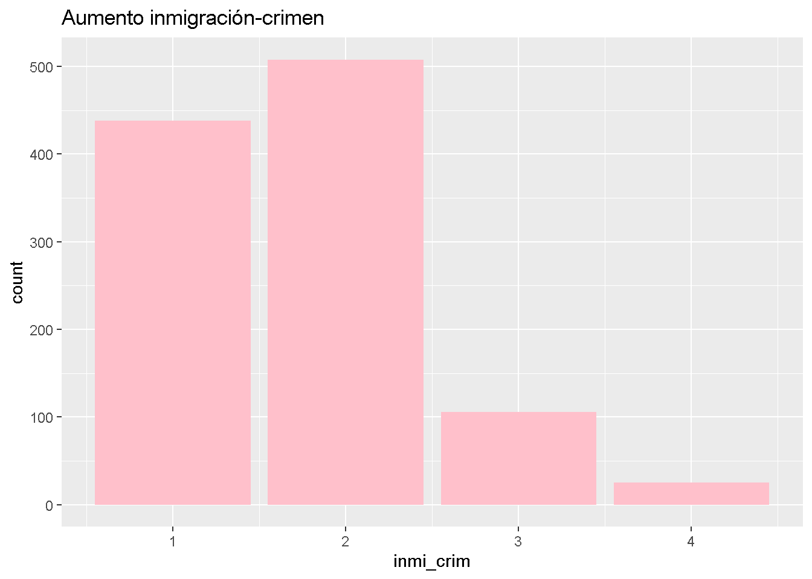
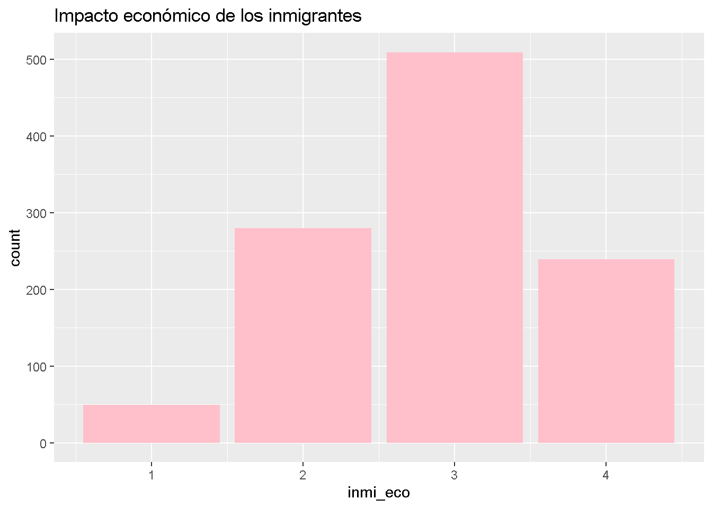
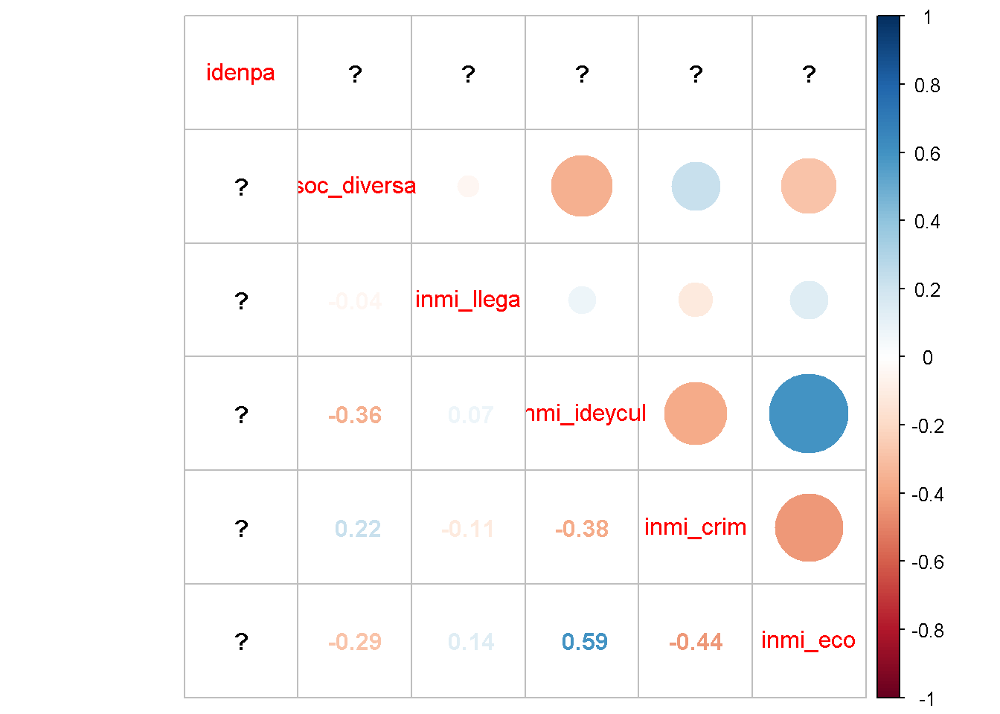
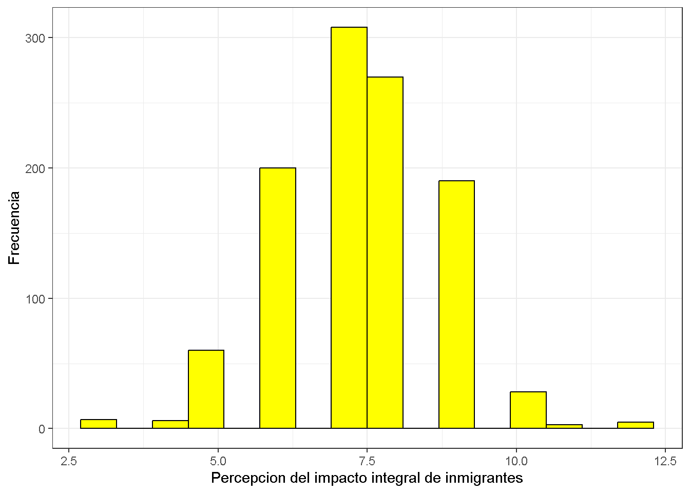

# 0.Ajustes iniciales:
rm(list=ls())
options(scipen=999)Impacto integral de inmigrantes
Percepción y Actitudes de la Población Chilena hacia la Migración: Un Análisis de Variables Multidimensionales
El fenómeno de la migración ha cobrado una creciente relevancia en Chile en las últimas décadas, generando debates y discusiones en torno a su impacto en la sociedad. La diversidad social a nivel socio-cultural, politica y economicamente llega afectar a una sociedad determinada, sobre todo genera complicaciones y conflictos sociales a la hora de interactuar e intregrarse socialmente, ya sea a nivel individual, intersubjetivo o social; estos comportamientos afectarían directamente a la cohesión y/o segregación social. Analizar la manera de pensar de la población chilena respecto a una sociedad diversa y multicultural, incluyendo posibles prejuicios o estereotipos.
Este estudio se propone a explorar las percepciones y actitudes de la población chilena hacía la migración, utilizando los datos abtraidos de la base de datos “Latinobarometro, cuestionario 2023”, la cual maneja e investiga el desarrollo de la democracia, la economía y la sociedad en su conjunto, por medio de un estudio de opinión pública que aplica anualmente alrededor de 18 países de América Latina representando a más de 600 millones de habitantes; producen y publican los resultados, permitiendo ser utilizados en estudios como este. Para este estudio utilizamos diversas dimensiones para lograr explorar las distintas formas de pensar y grado de acuerdo respecto una sociedad mas diversa, afectado por la llegada de inmigrantes al país; entre ellos contamos con: Grado de acuerdo: Los inmigrantes son buenos para la economia del país, Grado de acuerdo: Inmigrantes causan un aumento del crimen, Grado de acuerdo: Los inmigrantes mejoran nuestra sociedad con ideas y cultura, finalmente la manera de pensar sobre una sociedad mas diversa o una que mantenga una defensa en sus tradicicones y costumbres. Para fines de esta ivestigación se trabajó con una base de datos recodificada, incorporando estas variables y fltrada a caso chileno.
# PAQUETES
library(pacman)
pacman::p_load(haven,
sjlabelled,
dplyr, #Manipulacion de datos
stargazer, #Tablas
sjmisc, # Tablas
summarytools, # Tablas
kableExtra, #Tablas
sjPlot, #Tablas y gráficos
corrplot, # Correlaciones
sessioninfo, # Información de la sesión de trabajo
ggplot2, # Para la mayoría de los gráficos
mice) #Para imputar NA'sInstalling package into 'C:/Users/Javi/AppData/Local/R/win-library/4.2'
(as 'lib' is unspecified)Warning: unable to access index for repository http://www.stats.ox.ac.uk/pub/RWin/bin/windows/contrib/4.2:
no fue posible abrir la URL 'http://www.stats.ox.ac.uk/pub/RWin/bin/windows/contrib/4.2/PACKAGES'package 'sjPlot' successfully unpacked and MD5 sums checked
The downloaded binary packages are in
C:\Users\Javi\AppData\Local\Temp\Rtmp2R35R1\downloaded_packages
sjPlot installedWarning in pacman::p_load(haven, sjlabelled, dplyr, stargazer, sjmisc, summarytools, : Failed to install/load:
sjPlot#2.Carga de base:
load(file = "Input/proc_data.RData")#3.Descriptivos:
summarytools::dfSummary(proc_data, plain.ascii = FALSE)### Data Frame Summary
#### proc_data
**Dimensions:** 1077 x 6
**Duplicates:** 912
---------------------------------------------------------------------------------------------------------------
No Variable Stats / Values Freqs (% of Valid) Graph Valid Missing
---- --------------- ------------------------ --------------------- ---------------------- ---------- ---------
1 idenpa\ 1 distinct value 152 : 1077 (100.0%) IIIIIIIIIIIIIIIIIIII 1077\ 0\
[integer] (100.0%) (0.0%)
2 soc_diversa\ Min : 1\ 1 : 594 (55.2%)\ IIIIIIIIIII \ 1077\ 0\
[integer] Mean : 1.4\ 2 : 483 (44.8%) IIIIIIII (100.0%) (0.0%)
Max : 2
3 inmi_llega\ Mean (sd) : 2.2 (0.6)\ 1 : 124 (11.5%)\ II \ 1077\ 0\
[integer] min < med < max:\ 2 : 661 (61.4%)\ IIIIIIIIIIII \ (100.0%) (0.0%)
1 < 2 < 3\ 3 : 292 (27.1%) IIIII
IQR (CV) : 1 (0.3)
4 inmi_ideycul\ Mean (sd) : 2.8 (0.9)\ 1 : 62 ( 5.8%)\ I \ 1077\ 0\
[integer] min < med < max:\ 2 : 375 (34.8%)\ IIIIII \ (100.0%) (0.0%)
1 < 3 < 4\ 3 : 392 (36.4%)\ IIIIIII \
IQR (CV) : 1 (0.3) 4 : 248 (23.0%) IIII
5 inmi_crim\ Mean (sd) : 1.7 (0.7)\ 1 : 438 (40.7%)\ IIIIIIII \ 1077\ 0\
[integer] min < med < max:\ 2 : 508 (47.2%)\ IIIIIIIII \ (100.0%) (0.0%)
1 < 2 < 4\ 3 : 106 ( 9.8%)\ I \
IQR (CV) : 1 (0.4) 4 : 25 ( 2.3%)
6 inmi_eco\ Mean (sd) : 2.9 (0.8)\ 1 : 49 ( 4.5%)\ \ 1077\ 0\
[integer] min < med < max:\ 2 : 280 (26.0%)\ IIIII \ (100.0%) (0.0%)
1 < 3 < 4\ 3 : 509 (47.3%)\ IIIIIIIII \
IQR (CV) : 1 (0.3) 4 : 239 (22.2%) IIII
---------------------------------------------------------------------------------------------------------------view(dfSummary(proc_data, headings=FALSE)) %>%
kable(.,"markdown")Switching method to 'browser'Output file written: C:\Users\Javi\AppData\Local\Temp\Rtmp2R35R1\filef841e54372.htmlSwitching method to 'browser'Output file written: C:\Users\Javi\AppData\Local\Temp\Rtmp2R35R1\filef847e2c4af4.html| x |
|---|
| C:2R35R1847e2c4af4.html |
La tabla nos muestra como en general parece haber una tendencia hacía actitudes positivas o neutrales hacía la inmigración en diferentes aspectos evaluados, como la llegada de inmigrantes, teniendo en claro que esta puede perjudicar o beneficiar a la sociedad; el aporte de ideas y cultura, seguido por la forma de pensar respecto a que esta sea mas diversa, y su impacto económico. Sin embargo, la percepción en relación con el crimen parece ser más variada.
#3.1 Gráficos:
frq(proc_data$inmi_ideycul)x <integer>
# total N=1077 valid N=1077 mean=2.77 sd=0.87
Value | N | Raw % | Valid % | Cum. %
--------------------------------------
1 | 62 | 5.76 | 5.76 | 5.76
2 | 375 | 34.82 | 34.82 | 40.58
3 | 392 | 36.40 | 36.40 | 76.97
4 | 248 | 23.03 | 23.03 | 100.00
<NA> | 0 | 0.00 | <NA> | <NA>ggplot(proc_data, aes(x = inmi_ideycul)) +
geom_bar(fill = "pink") +
labs (title = "Interculturalidad")
frq(proc_data$inmi_crim)x <integer>
# total N=1077 valid N=1077 mean=1.74 sd=0.73
Value | N | Raw % | Valid % | Cum. %
--------------------------------------
1 | 438 | 40.67 | 40.67 | 40.67
2 | 508 | 47.17 | 47.17 | 87.84
3 | 106 | 9.84 | 9.84 | 97.68
4 | 25 | 2.32 | 2.32 | 100.00
<NA> | 0 | 0.00 | <NA> | <NA>ggplot(proc_data, aes(x = inmi_crim)) +
geom_bar(fill = "pink") +
labs (title = "Aumento inmigración-crimen")
frq(proc_data$inmi_eco)x <integer>
# total N=1077 valid N=1077 mean=2.87 sd=0.80
Value | N | Raw % | Valid % | Cum. %
--------------------------------------
1 | 49 | 4.55 | 4.55 | 4.55
2 | 280 | 26.00 | 26.00 | 30.55
3 | 509 | 47.26 | 47.26 | 77.81
4 | 239 | 22.19 | 22.19 | 100.00
<NA> | 0 | 0.00 | <NA> | <NA>ggplot(proc_data, aes(x = inmi_eco)) +
geom_bar(fill = "pink") +
labs (title = "Impacto económico de los inmigrantes")
Si observamos el grafico “Interculturalidad” nos entrega informacion respecto al grado de acuerdo de la poblacion Chilena al considerar que los inmigrantes han logrado mejorar nuestra sociedad con ideas y cutura; más de 350 personas están de acuerdo, sin embargo, cerca de 400 personas mantienen su desacuerdo. Se interpreta una fuerte opinion a la idea de que la sociedad Chilena defiende sus costumbres.
Si bien el grafico “Aumento inmigracion-crimen”, referida a que han aumentado la delincuencia en las calles. Si bien tiene dos de sus barras muy cercanas, observamos que mas de 500 personas estarian de acuerdo en que gracias al fenomeno de la migración, se ha visualizado un aumento en el crimen. Muy pocas personas, menos de 100, estarian en contra de esto.
Por ultimo, si analizamos brevemente el ultimo grafico “impacto economico de los inmigrantes”, entendiendo este impacto a partir de si los inmigrantes son buenos para la economia del país. La mayoria de la sociedad Chilena estaría en desacuerdo con este postulado. Se podría deber a dististos factores que llegan a afectar la manera de pensar, socialmente el pensamiendo de “nos vienen a robar el trabajo” está normalizado.
#4.Correlación:
cor_proc_data <- cor(proc_data,
use = "complete.obs")Warning in cor(proc_data, use = "complete.obs"): the standard deviation is zerocor_proc_data idenpa soc_diversa inmi_llega inmi_ideycul inmi_crim inmi_eco
idenpa 1 NA NA NA NA NA
soc_diversa NA 1.00000000 -0.04450943 -0.3555942 0.2218694 -0.2892966
inmi_llega NA -0.04450943 1.00000000 0.0731263 -0.1103265 0.1375182
inmi_ideycul NA -0.35559423 0.07312630 1.0000000 -0.3757125 0.5934392
inmi_crim NA 0.22186937 -0.11032652 -0.3757125 1.0000000 -0.4384266
inmi_eco NA -0.28929657 0.13751819 0.5934392 -0.4384266 1.0000000corrplot.mixed(cor_proc_data)
Hay correlaciones calculadas entre “soc_diversa” referida a la manera de pensar que tiene la poblacion Chilena respecto a una sociedad la cual defienda sus costumbres o una que éste abierta a la diveridad de todo tipo de costumbres, e “inmi_ideycul” entendida como aportacion positiva de inmigrantes a la sociedad en idea y cultura, esta es de -0.35559423, lo que sugiere una correlación negativa moderada. Esto significa que hay una asociación inversa entre la percepción de la diversidad social y la percepción de la interculturalidad. Hay una correlación positiva moderada entre “inmi_llega” : llegada de inmigrantes perjudica o beneficia, e “inmi_eco”: imigrantes aportan positivamete ala economia del país, es de (0.13751819), lo que sugiere que una percepción positiva de la llegada de inmigrantes tiende a estar asociada con una percepción positiva del impacto económico de la inmigración.
#5.Confiabilidad del conjunto:
## Alpha de Cronbach:
psych::alpha(proc_data, check.keys = TRUE)Warning in psych::alpha(proc_data, check.keys = TRUE): Item = idenpa had no
variance and was deleted but still is counted in the scoreWarning in psych::alpha(proc_data, check.keys = TRUE): Some items were negatively correlated with the first principal component and were automatically reversed.
This is indicated by a negative sign for the variable name.
Reliability analysis
Call: psych::alpha(x = proc_data, check.keys = TRUE)
raw_alpha std.alpha G6(smc) average_r S/N ase mean sd median_r
0.66 -0.38 0.0062 -0.059 -0.28 0.015 28 0.39 -0.077
95% confidence boundaries
lower alpha upper
Feldt 0.63 0.66 0.69
Duhachek 0.63 0.66 0.69
Reliability if an item is dropped:
raw_alpha std.alpha G6(smc) average_r S/N alpha se var.r med.r
soc_diversa- 0.64 -0.085 0.207 -0.020 -0.079 0.017 0.144 -0.019
inmi_llega 0.71 -0.633 -0.044 -0.107 -0.388 0.013 0.175 -0.322
inmi_ideycul 0.53 -0.472 -0.165 -0.087 -0.321 0.022 0.063 -0.077
inmi_crim- 0.59 0.072 0.270 0.019 0.078 0.018 0.117 0.014
inmi_eco 0.50 -0.559 -0.233 -0.099 -0.359 0.023 0.056 -0.077
Item statistics
n raw.r std.r r.cor r.drop mean sd
soc_diversa- 1077 0.53 0.27 -2.13 0.35 3.6 0.50
inmi_llega 1077 0.38 0.54 0.51 0.13 2.2 0.60
inmi_ideycul 1077 0.79 0.48 2.19 0.57 2.8 0.87
inmi_crim- 1077 0.68 0.15 -3.14 0.45 3.3 0.73
inmi_eco 1077 0.80 0.51 2.72 0.61 2.9 0.80
Non missing response frequency for each item
1 2 3 4 miss
soc_diversa 0.55 0.45 0.00 0.00 0
inmi_llega 0.12 0.61 0.27 0.00 0
inmi_ideycul 0.06 0.35 0.36 0.23 0
inmi_crim 0.41 0.47 0.10 0.02 0
inmi_eco 0.05 0.26 0.47 0.22 0##Alpha de Cronbach recodificado:
psych::alpha(dplyr::select(proc_data, inmi_ideycul, inmi_crim, inmi_eco),check.keys = TRUE)Warning in psych::alpha(dplyr::select(proc_data, inmi_ideycul, inmi_crim, : Some items were negatively correlated with the first principal component and were automatically reversed.
This is indicated by a negative sign for the variable name.
Reliability analysis
Call: psych::alpha(x = dplyr::select(proc_data, inmi_ideycul, inmi_crim,
inmi_eco), check.keys = TRUE)
raw_alpha std.alpha G6(smc) average_r S/N ase mean sd median_r
0.73 -0.26 0.21 -0.074 -0.21 0.014 3 0.65 -0.38
95% confidence boundaries
lower alpha upper
Feldt 0.7 0.73 0.75
Duhachek 0.7 0.73 0.76
Reliability if an item is dropped:
raw_alpha std.alpha G6(smc) average_r S/N alpha se var.r med.r
inmi_ideycul 0.61 -1.56 -0.44 -0.44 -0.61 0.024 NA -0.44
inmi_crim- 0.74 0.74 0.59 0.59 2.92 0.016 NA 0.59
inmi_eco 0.54 -1.20 -0.38 -0.38 -0.55 0.028 NA -0.38
Item statistics
n raw.r std.r r.cor r.drop mean sd
inmi_ideycul 1077 0.84 0.76 0.79 0.58 2.8 0.87
inmi_crim- 1077 0.73 0.12 -0.81 0.45 3.3 0.73
inmi_eco 1077 0.85 0.72 0.76 0.63 2.9 0.80
Non missing response frequency for each item
1 2 3 4 miss
inmi_ideycul 0.06 0.35 0.36 0.23 0
inmi_crim 0.41 0.47 0.10 0.02 0
inmi_eco 0.05 0.26 0.47 0.22 0Este análisis indica que la consistencia entre las variables “inmi_ideycul”. “inmi_crim”, “inmi_eco” es aceptable y logran explicar la con mayor fiabilidad la percepción y actitudes de la población chilena respecto al fenomeno de migración, esta es de 0.73.
#CONSTRUCCION DE ESCALA:
proc_data <- proc_data %>%
rowwise() %>%
mutate(percepcion_impacto_integral_inmigrantes = sum(inmi_ideycul, inmi_crim, inmi_eco))
summary(proc_data$percepcion_impacto_integral_inmigrantes) Min. 1st Qu. Median Mean 3rd Qu. Max.
3.000 6.000 7.000 7.376 8.000 12.000 ggplot(proc_data, aes(x = percepcion_impacto_integral_inmigrantes)) +
geom_histogram(binwidth = 0.6, colour = "black", fill = "yellow") +
theme_bw() +
xlab("Percepcion del impacto integral de inmigrantes") +
ylab("Frecuencia")
Esta escala ofrece una visión general de como está distribuida la “Percepcion del impacto integral de inmigrantes”, si bien tiene variabilidad en los extremos de la distribuicion, esta tiene centralidad alrededor de 7 en una escala de 3 a 12.